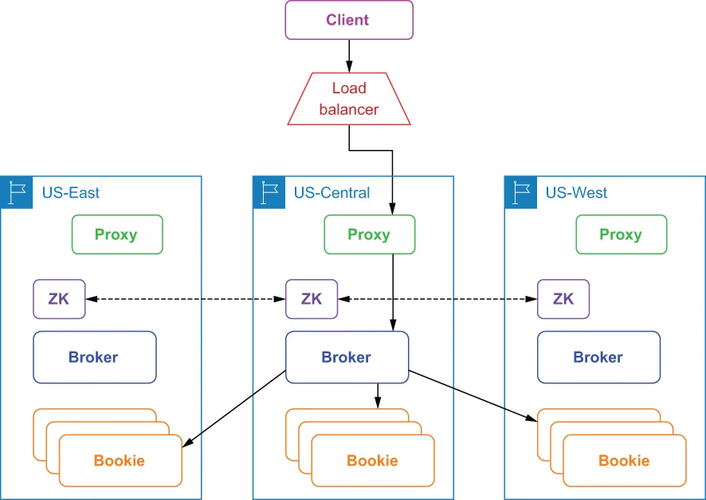

A synchronous geo-replicated Pulsar installation consists of a cluster of bookies running across multiple regions, a cluster of brokers also distributed across all regions, and a single global ZooKeeper installation to form a single global logical instance across all available regions, as shown in figure B.1. The global “stretched” ZooKeeper ensemble is critical to supporting this approach because it is used to store the managed ledgers.
一个同步异地复制的 Pulsar 安装，由跨多个区域运行的一批 bookie、同样分布在所有区域的一批 broker，以及一套单一的全局 ZooKeeper 安装构成，从而在全部可用区域之上形成一个单一的全局逻辑实例，如图 B.1 所示。那个全局的、被"拉长"的 ZooKeeper ensemble 对支持这种做法至关重要，因为它被用来存放各个受管 ledger。

Figure B.1 Clients access a synchronously geo-replicated cluster via a single load balancer, which forwards the publish request to one of the Pulsar proxies. The Proxy routes the request to the broker that owns the topic, which then publishes the data across the regions based on the placement policy that is configured.
图 B.1 客户端通过一个单一的负载均衡器来访问一个同步异地复制的集群；该负载均衡器把发布请求转发给某一个 Pulsar proxy。这个 Proxy 再把请求路由给拥有该主题的那个 broker，后者随即依据所配置的放置策略，把数据跨各个区域发布出去。
In the synchronous geo-replication case, when the client issues a write request to a Pulsar cluster in one geographical location, the data is written to multiple bookies in different geographical locations within the same call. The write request is only acknowledged to the client when the configured number of the data centers have issued a confirmation that the data has been persisted. While this approach provides the highest level of data guarantees, it also incurs the cost of the cross-datacenter network latency for each message.
在同步异地复制的情形下，当客户端向位于某个地理位置的 Pulsar 集群发出一个写入请求时，数据会在同一次调用中被写入位于不同地理位置的多个 bookie。只有当所配置数量的那些数据中心都已发出"数据已被持久化"的确认之后，这个写入请求才会向客户端返回确认。虽然这种做法提供了最高级别的数据保证，但它也让每条消息都背上了跨数据中心网络延迟的代价。
Synchronous geo-replication is actually achieved by Apache BookKeeper in the storage layer for Pulsar and relies on a placement policy to distribute the data across multiple data centers and to guarantee availability constraints. You can enable either the rack-aware or region-aware placement policy, depending on whether you are running in a bare metal or cloud environment, respectively, by modifying the broker configuration file (broker.conf), as shown in the following listing.
同步异地复制实际上是由作为 Pulsar 存储层的 Apache BookKeeper 来实现的，并且依赖于一条放置策略，来把数据分布到多个数据中心、并保证各项可用性约束。你可以启用机架感知（rack-aware）或区域感知（region-aware）放置策略——分别取决于你是运行在裸机环境还是云环境中——办法是修改 broker 的配置文件（broker.conf），如下面这份清单所示。
Listing B.1 Enabling the region-aware policy
# Set this to true if your cluster is spread across racks inside one
# datacenter or across multiple AZs inside one region
bookkeeperClientRackawarePolicyEnabled=true
# Set this to true if your cluster is spread across multiple datacenters or
# cloud provider regions.
bookkeeperClientRegionawarePolicyEnabled=true
When you enable the region-aware placement policy, for example, BookKeeper will choose bookies from different regions when forming a new bookie ensemble, which ensures that the topic data will be distributed evenly across all of the available regions. Note that only one of these settings will be honored at runtime with region awareness taking precedence if both are set to true.
举例来说，当你启用区域感知放置策略时，BookKeeper 在组建一个新的 bookie ensemble 时就会从不同区域中挑选 bookie，这确保了主题数据会被均匀地分布到全部可用区域。请注意，在运行时这两项设置中只有一项会被采纳；如果两者都被设为 true，则以区域感知优先。
The use of a single ZooKeeper cluster to implement synchronous geo-replication also requires some additional configuration changes in order for the geographically dispersed broker and bookie components to work together as a single cluster. Configuring ZooKeeper for such a scenario involves adding a server.N line to the conf/zookeeper.conf file for each node in the ZooKeeper cluster, where n is the number of the ZooKeeper nodes, as shown in the following listing, which uses one ZooKeeper node per region.
用单一 ZooKeeper 集群来实现同步异地复制，还需要做一些额外的配置变更，才能让那些地理上分散的 broker 和 bookie 组件作为一个单一集群协同工作。为这种场景配置 ZooKeeper，涉及为 ZooKeeper 集群中的每一个节点往 conf/zookeeper.conf 文件中添加一行 server.N，其中 n 是 ZooKeeper 节点的编号，如下面这份清单所示——该清单为每个区域使用一个 ZooKeeper 节点。
Listing B.2 Single ZooKeeper configuration for synchronous geo-replication
server.1=zk1.us-west.example.com:2888:3888
server.2=zk1.us-central.example.com:2888:3888
server.3=zk1.us-east.example.com:2888:3888
In addition to modifying the conf/zookeeper.conf file in the conf directory of each Pulsar installation, you will also need to modify the zkServers property in the conf/bookkeeper.conf file to list each of the ZooKeeper servers, as shown in the following listing.
除了修改每个 Pulsar 安装目录下 conf 目录中的 conf/zookeeper.conf 文件之外，你还需要修改 conf/bookkeeper.conf 文件中的 zkServers 属性，把每一个 ZooKeeper 服务器都列出来，如下面这份清单所示。
Listing B.3 BookKeeper configuration for synchronous geo-replication
zkServers= zk1.us-west.example.com:2181, zk1.us-central.example.com:2181,
zk1.us-east.example.com:2181
Similarly, you will need to update the zookeeperServers property in both the conf/ discovery.conf and conf/proxy.conf files to be a comma-separated list of the ZooKeeper servers as well, since both the Pulsar proxy and service discovery mechanism depend on ZooKeeper to provide them with up-to-date metadata about the Pulsar cluster.
类似地，你还需要更新 conf/discovery.conf 和 conf/proxy.conf 这两个文件中的 zookeeperServers 属性，同样把它们改成一份以逗号分隔的 ZooKeeper 服务器列表——因为 Pulsar proxy 和服务发现机制都依赖 ZooKeeper 来为它们提供关于该 Pulsar 集群的最新元数据。
Synchronous geo-replication provides stronger data consistency guarantees than asynchronous replication, since the data is always synchronized across the datacenters, making it easier to run your applications independent of where the messages are published. A synchronous geo-replicated Pulsar cluster can continue to function like normal even if an entire datacenter goes down, with the outage being entirely transparent to the applications that are accessing the cluster via a load balancer. This makes synchronous geo-replication good for mission-critical use cases that are able to tolerate a slightly higher publish latency.
同步异地复制提供了比异步复制更强的数据一致性保证，因为数据在各个数据中心之间始终是同步的，这让你的应用更容易做到"不依赖消息在何处发布"来运行。一个同步异地复制的 Pulsar 集群，即使整个数据中心宕掉，也能继续像往常一样运转，而这次中断对那些通过负载均衡器访问该集群的应用来说是完全透明的。这使得同步异地复制很适合那些能够容忍稍高一点发布延迟的关键任务型用例。